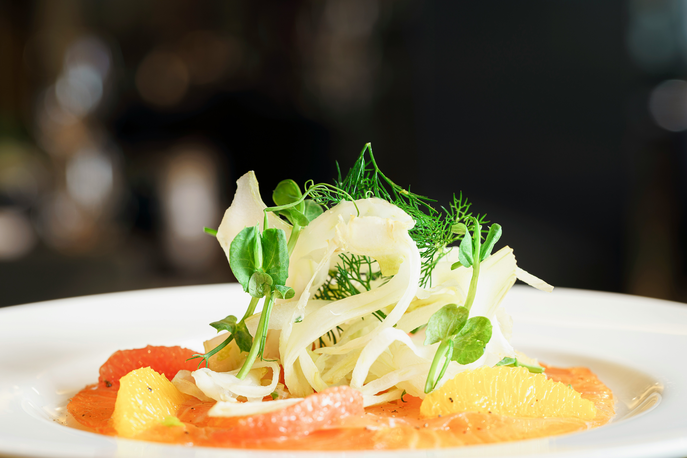
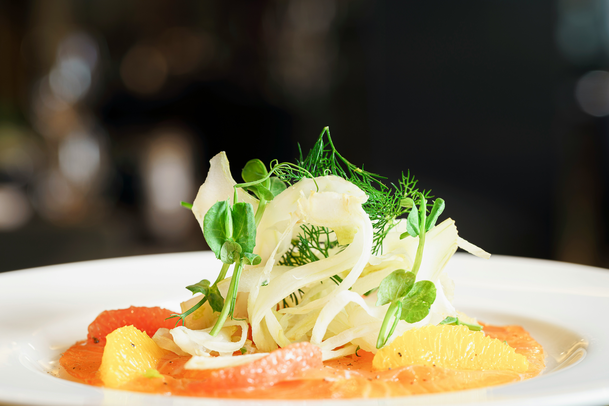

Menezes Surf Club Hotel
A história do Menezes Surf Club Hotel começa há várias décadas, quando a família Menezes Machado, com sua paixão pelo mar e pela hospitalidade, decidiu criar um refúgio à beira-mar em Saquarema. Localizada na pitoresca Praia de Itaúna, a família viu o potencial da região para se tornar um destino para surfistas e amantes da natureza. Assim, nasceu o Menezes Surf Club Hotel, um lugar onde a hospitalidade e a paixão pelo mar se encontram. No entanto, a história do nosso hotel seria incompleta sem mencionar Bea e Mariana, um casal cuja conexão profunda com Saquarema e o estilo de vida à beira-mar trouxe uma nova dimensão ao Menezes Surf Club Hotel. Apaixonadas pela natureza e pelo surf, elas perceberam o potencial da região e, movidas por seu amor pelo mar, decidiram criar uma escola de surf que não apenas ensinasse a prática do esporte, mas também celebrasse a rica cultura local.
Descubra uma experiência gastronômica única em nosso restaurante, onde sabores irresistíveis e um ambiente acolhedor esperam por você. Venha saborear o melhor da culinária local e internacional!
 



Gastronomia que Enche a Alma
No Menezes Surf Club Hotel, acreditamos que uma experiência memorável à beira-mar não estaria completa sem uma gastronomia de excelência. Nosso restaurante, com vista panorâmica para o mar, é um convite para uma jornada culinária que celebra os sabores autênticos de Saquarema. Aqui, cada prato é preparado com amor e dedicação, utilizando ingredientes frescos e sazonais que refletem a riqueza da nossa terra e do nosso mar.


Ambiente Aconchegante e Convidativo
O ambiente do nosso restaurante é pensado para proporcionar uma experiência acolhedora e relaxante. Com uma decoração que reflete o charme de Saquarema e uma vista deslumbrante para a Praia de Itaúna, nossos hóspedes podem desfrutar de suas refeições em um cenário que combina conforto e beleza natural. Seja para um café da manhã tranquilo com a brisa do mar, um almoço delicioso após uma manhã de surf ou um jantar romântico sob as estrelas, nosso restaurante é o lugar perfeito para qualquer ocasião.
Venha nos conhecer!
Convidamos você a descobrir os sabores únicos de Saquarema no Menezes Surf Club Hotel. Seja você um hóspede do hotel ou um visitante à procura de uma experiência culinária excepcional, nosso restaurante é um destino imperdível. Venha desfrutar de uma refeição que combina a melhorgastronomia com a vista mais deslumbrante. Esperamos por você para compartilhar momentos deliciosos e inesquecíveis.
Descubra uma variedade de atividades exclusivas que tornarão sua estadia inesquecível!
Aulas de Surf com Instrutores Experientes para Todas as Idades
No Menezes Surf Club Hotel, o surf é o destaque principal. As aulas de surf são conduzidas por instrutores altamente qualificados e experientes, que conhecem profundamente as melhores praias locais e as condições ideais para a prática do esporte. As aulas são projetadas para atender tanto iniciantes quanto surfistas mais experientes, garantindo uma experiência segura e divertida para todos, incluindo crianças. Além das técnicas de surf, os instrutores também ensinam sobre a importância da segurança no mar e a preservação ambiental das praias.
Aulas de Yoga para Todos os Níveis
Para complementar a experiência de surf e proporcionar um equilíbrio mental e físico, o hotel oferece aulas de yoga a beira mar. As sessões de yoga são adaptadas para todos os níveis, desde iniciantes até praticantes avançados, e são realizadas em locais especialmente escolhidos para maximizar a conexão com a natureza. Os instrutores de yoga são dedicados a ajudar os participantes a melhorar sua flexibilidade, força e concentração, promovendo um estado de relaxamento profundo e bem-estar.
Trilhas para cachoeiras locais
Além das trilhas guiadas que oferecem vistas panorâmicas e uma imersão na natureza, o Menezes Surf Club Hotel também proporciona aos seus hóspedes a oportunidade de explorar algumas das cachoeiras mais encantadoras da região de Saquarema. Entre elas, destacam-se a Cachoeira do Tinguí e as Cachoeiras do Roncador, acessíveis por trilhas fáceis que oferecem uma experiência revigorante para todas as idades.
Caiaque, Paddle Boarding e Outras Atividades Aquáticas
Além do surf, o hotel oferece uma ampla gama de esportes aquáticos para os hóspedes aproveitarem o mar de diferentes maneiras. As atividades incluem caiaque, paddle boarding, snorkeling, mergulho e jet ski. Cada atividade é planejada para proporcionar diversão e aventura, com equipamentos de alta qualidade e instruções claras para garantir a segurança e a satisfação dos participantes. Os hóspedes podem explorar recifes de corais, baías tranquilas e enseadas secretas, vivenciando a beleza subaquática e a diversidade marinha da região.